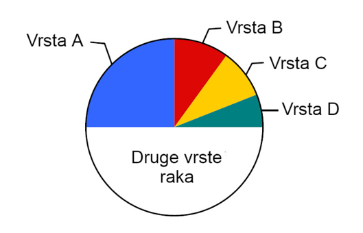
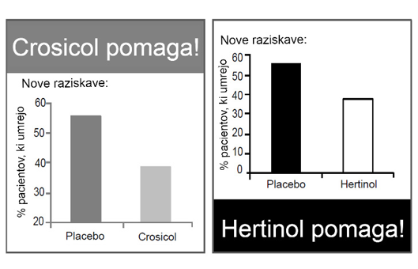
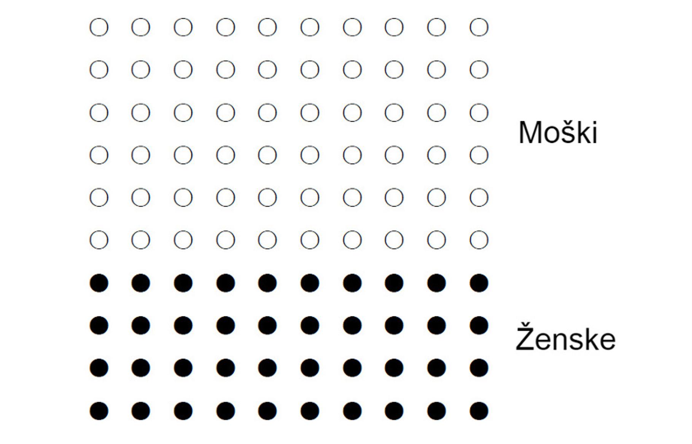
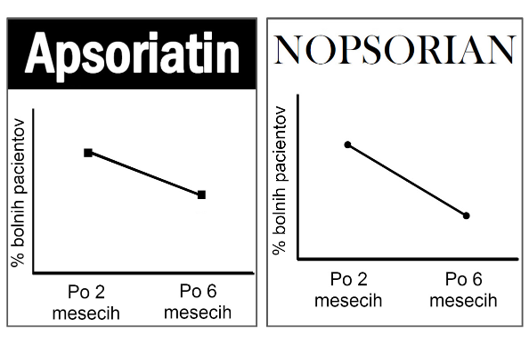

Test grafične pismenosti
Spodnji grafikon prikazuje odstotek ljudi, ki umrejo zaradi različnih vrst raka.
Približno kolikšen odstotek ljudi, ki umrejo zaradi raka, umre zaradi raka B, raka C in raka D skupaj?
V reviji opazite dve reklami. Vsaka reklama promovira drugo zdravilo za zdravljene srčne bolezni. Obe reklami vključujeta grafikon, ki prikazuje učinkovitost zdravila v primerjavi s placebom.
V primerjavi s placebom, katero zdravilo vodi do večjega upada odstotka bolnikov, ki umrejo?
Spodnji grafikon prikazuje število moških in žensk z boleznijo X. Na grafikonu je skupno 100 krogcev.
Koliko več moških kot žensk je med 100 bolniki z boleznijo X?
V časopisu opazite dve reklami. Vsaka reklama promovira drugo zdravilo za kožno bolezen. Obe reklami vključujeta grafikon, ki prikazuje učinkovitost zdravljena skozi čas.
Uporaba katerega zdravila vodi do večjega upada bolnih pacientov?
Rezultat: / 4
Dosegli ste boljše rezultate kot 0 % posameznikov.
(glede na podatke v raziskavi "Using the Short Graph Literacy Scale to Predict Precursors of Health Behavior Change")
Dosegli ste boljše rezultate kot 8.4 % posameznikov.
(glede na podatke v raziskavi "Using the Short Graph Literacy Scale to Predict Precursors of Health Behavior Change")
Dosegli ste boljše rezultate kot 26.4 % posameznikov.
(glede na podatke v raziskavi "Using the Short Graph Literacy Scale to Predict Precursors of Health Behavior Change")
Dosegli ste boljše rezultate kot 58 % posameznikov.
(glede na podatke v raziskavi "Using the Short Graph Literacy Scale to Predict Precursors of Health Behavior Change")
Dosegli ste boljše rezultate kot 89.7 % posameznikov.
(glede na podatke v raziskavi "Using the Short Graph Literacy Scale to Predict Precursors of Health Behavior Change")
Glede na rezultate je vaša grafična pismenost zelo nizka. Nizka grafična pismenost lahko resno omeji vašo sposobnost razumevanja in pravilnega interpretiranja podatkov v grafikonih. To vas naredi zelo dovzetne za zavajanje in manipulacijo. Svetujemo, da preučite teorijo in nato utrdite svoje znanje z reševanjem nalog.
Glede na rezultate je vaša grafična pismenost zelo nizka. Nizka grafična pismenost lahko znatno vpliva na vašo sposobnost pravilnega razumevanja grafičnih prikazov podatkov. Posledično ste bolj izpostavljeni tveganju, da vas zavedejo ali manipulirajo s pomočjo napačnih ali pristranskih grafikonov. Svetujemo, da preučite teorijo in nato utrdite svoje znanje z reševanjem nalog.
Glede na rezultate je vaša grafična pismenost nizka. Nizka grafična pismenost negativno vpliva na sposobnost sprejemanja dobrih odločitev in prepoznavanja tveganj. Svetujemo, da preučite teorijo in nato utrdite svoje znanje z reševanjem nalog.
Glede na rezultate je vaša grafična pismenost visoka. Visoka grafična pismenost pozitivno vpliva na sprejemanje odločitev in prepoznavanje manipulacij v grafikonih. Svoje znanje lahko utrdite z reševanjem nalog.
Glede na rezultate je vaša grafična pismenost zelo visoka. Visoka grafična pismenost vam omogoča, da zlahka razumete in pravilno interpretirate podatke v grafikonih. To zmanjšuje tveganje, da bi bili zavedeni ali manipulirani s pomočjo napačnih grafičnih prikazov podatkov. Svoje znanje lahko preverite z reševanjem nalog.
O testu
Test grafične pismenosti temelji na raziskavi "Using the Short Graph Literacy Scale to Predict Precursors of Health Behavior Change" in je preveden v slovenščino. Prvotna verzija testa je vključevala 13 nalog, ki so preizkušale tri ključne vidike grafične pismenosti: sposobnost natančnega iskanja specifičnih podatkov v grafikonu, razumevanje odnosov med različnimi podatki ter sposobnost sklepanja in napovedovanja na podlagi prikazanih informacij. Leta 2018 je bil test skrajšan na 4 naloge, ki prav tako zanesljivo merijo grafično pismenost.
Navodila
Test grafične pismenosti zajema 4 naloge. Vsaka naloga vsebuje grafikon, razlago grafikona in vprašanje. Ko odgovorite na vprašanje, kliknite gumb "Nadaljuj". Med reševanjem in po koncu testa ne boste prejeli nobenih povratnih informacij o pravilnosti posameznih odgovorov, saj test vključuje le 4 stalne naloge. Vsaka naloga je ocenjena z 0 točkami (nepravilen odgovor) ali 1 točko (pravilen odgovor). Po zaključku testa boste prejeli skupni rezultat in interpretacijo dobljenega rezultata.